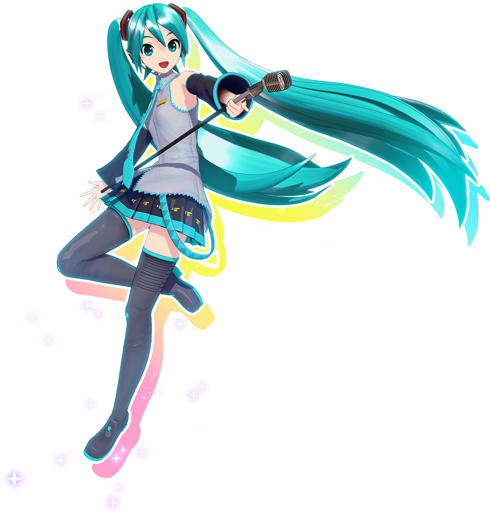
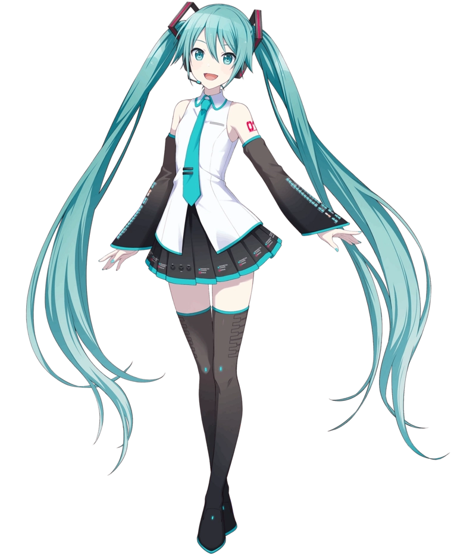
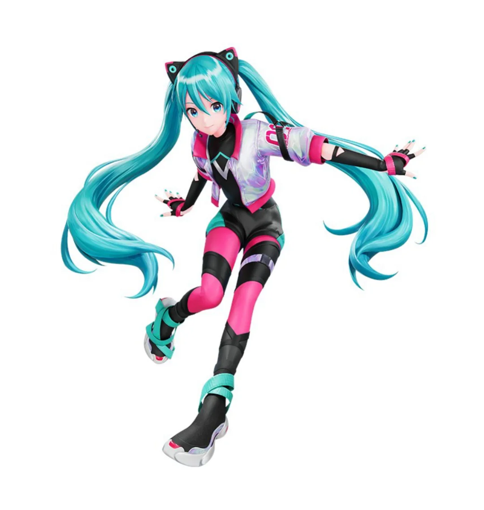

Miku Games and Other Misc Mikus
Miku's design is joint owned by Sega Future Media, allowing her design to appear in a number of their games
There are also video games that not only feature Miku, but center around her. Namely: Project Sekaii (also known as Colorful Stage) and Project Diva. Both are rythm games released for mobile and the PSVita respectively.


